Schématické značky
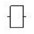
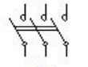
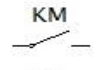
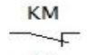
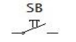
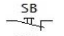
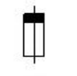
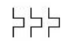
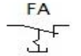
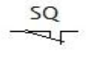
Písmenné značení prvků
| Značka | Prvek |
|---|---|
| KM | Stykač |
| SB | Tlačítko se samočinným návratem |
| FA | Proudová ochrana, nadproudé relé |
| FU | Tavná pojistka |
| FS | Jistič vedení |
| SQ | Koncový spínač |
| HL | Žárovka, signálka |
Ovládání motoru z jednoho místa
Základní zapojení stykače s tlačítkovým ovládáním umožňuje spustit a zastavit motor (nebo jiné zátěže) pomocí dvou tlačítek – START a STOP.
Stykač se sepne stisknutím tlačítka START. Pomocný kontakt stykače (samodržení) zajistí, že stykač zůstane sepnutý i po uvolnění tlačítka. Stisknutím STOP se obvod přeruší a stykač vypadne.
Princip zapojení
- Tlačítko STOP je rozpínací (NC) – v klidu zavřené
- Tlačítko START je spínací (NO) – v klidu otevřené
- Pomocný kontakt stykače zapojen paralelně ke START → samodržení
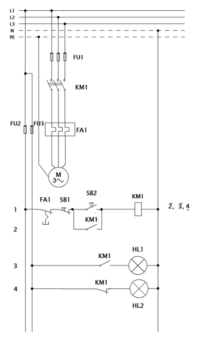
Vzájemné blokování dvou stykačů
Vzájemné blokování zajišťuje, že nemohou být sepnuty oba stykače současně.
Do ovládacího obvodu každého stykače je zařazen rozepínací pomocný kontakt druhého stykače. Pokud je jeden stykač sepnutý, jeho pomocný kontakt přeruší obvod druhého stykače – ten nelze sepnout.
Princip zapojení
- Stykač 1 má v ovládacím obvodu rozepínací kontakt KM2
- Stykač 2 má v ovládacím obvodu rozepínací kontakt KM1
- Sepnutí jednoho stykače mechanicky i elektricky zablokuje druhý
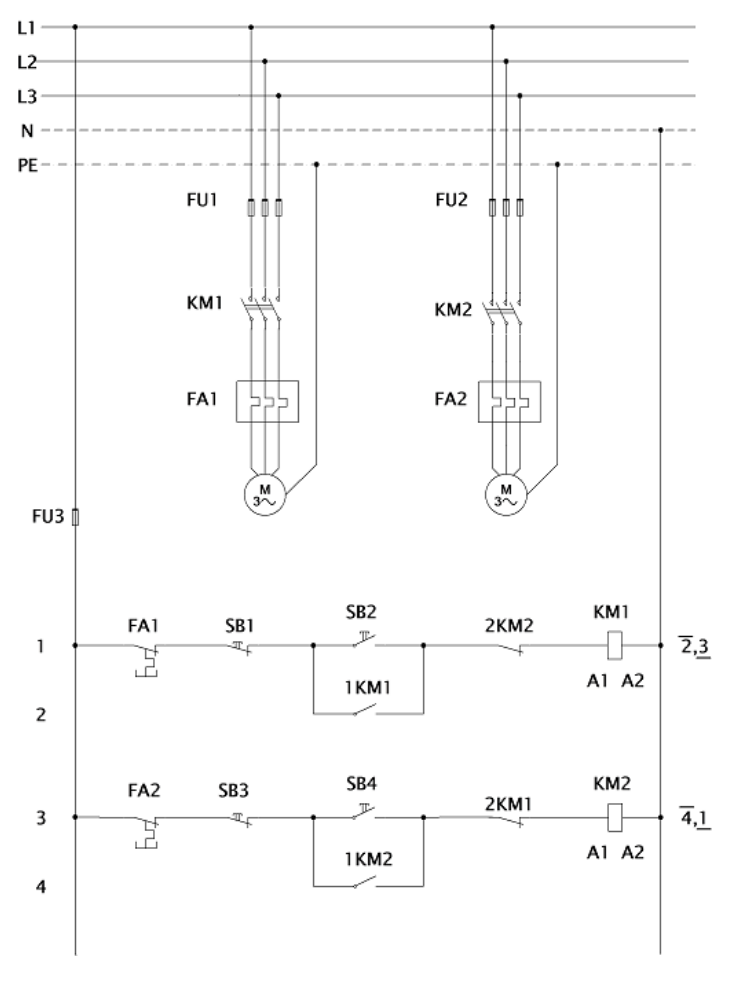
Motorová reverzace – změna smyslu otáčení
Reverzace asynchronního motoru se provádí záměnou dvou fází na svorkách statoru. K tomu slouží dva stykače – jeden pro chod vpřed (KM1), druhý pro chod vzad (KM2).
Oba stykače nesmí být sepnuty současně – způsobilo by to mezifázový zkrat. Proto je toto zapojení vždy doplněno vzájemným blokováním (viz sekce 2).
Princip zapojení
- KM1 připojí motor v pořadí fází L1–L2–L3
- KM2 připojí motor s prohozením fází L1–L3–L2 (záměna dvou fází)
- Vzájemné blokování je povinnou součástí zapojení
- Mezi oběma chody je nutná prodleva (motor musí doběhnout nebo se zastavit)
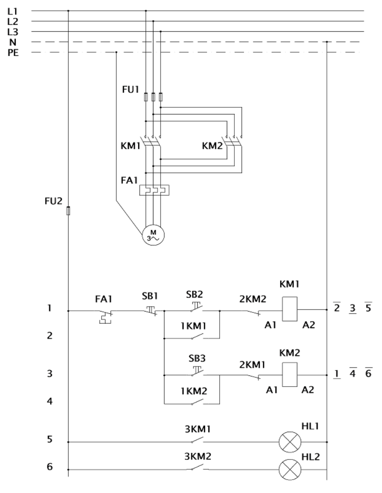
Motorová reverzace s koncáky
Reverzace asynchronního motoru se provádí záměnou dvou fází na svorkách statoru. K tomu slouží dva stykače – jeden pro chod vpřed (KM1), druhý pro chod vzad (KM2).
Oba stykače nesmí být sepnuty současně – způsobilo by to mezifázový zkrat. Proto je toto zapojení vždy doplněno vzájemným blokováním (viz sekce 2).
Princip zapojení
- KM1 připojí motor v pořadí fází L1–L2–L3
- KM2 připojí motor s prohozením fází L1–L3–L2 (záměna dvou fází)
- Vzájemné blokování je povinnou součástí zapojení
- Mezi oběma chody je nutná prodleva (motor musí doběhnout nebo se zastavit)
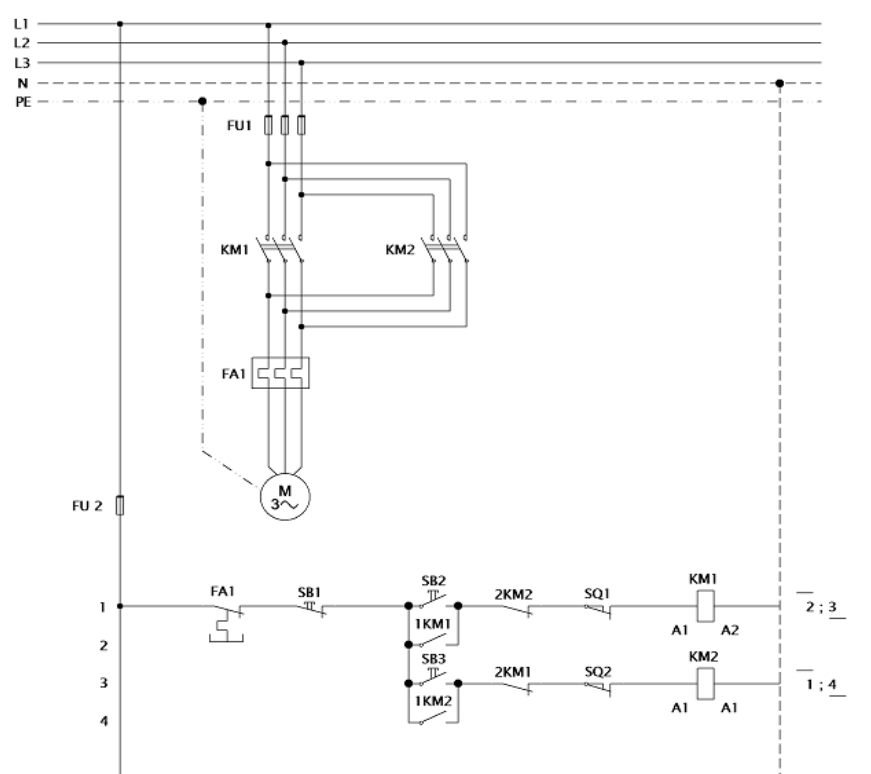